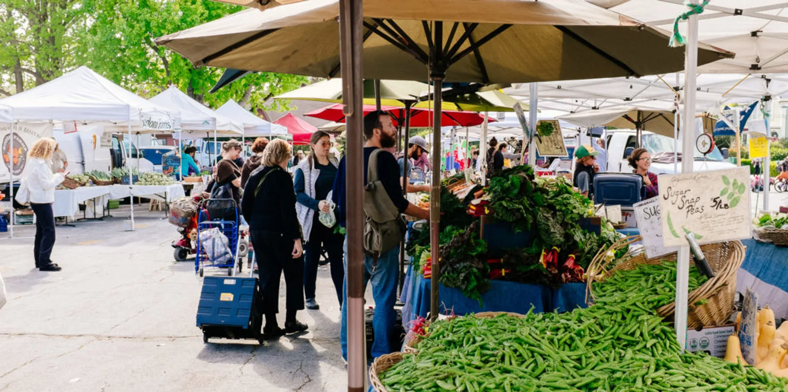

Santa Cruz Population
The population of Santa Cruz is a diverse blend, reflecting the city's coastal appeal and cultural richness. With just over 60,000 residents, it draws a mix of students from the University of California, Santa Cruz, local families, and professionals seeking a relaxed, creative lifestyle. This vibrant community is bolstered by the thriving tourism industry and the tech economy from neighboring Silicon Valley, making it a dynamic melting pot that thrives on artistic pursuits, environmental awareness, and outdoor recreation.

From The Begining
Santa Cruz was incorporated as a city in 1866, marking the formal establishment of a community that had already been a hub of activity on California's central coast for many years. Its incorporation came during a period of rapid development and transformation, reflecting the town's burgeoning growth as a center for agriculture, lumber, and early tourism. The legacy of its early industries, combined with its scenic natural beauty and vibrant cultural life, has continued to shape Santa Cruz's unique character over the years.

Location
Santa Cruz lies on California's central coast, bordered by the Santa Cruz Mountains to the northeast and the vast Monterey Bay to the southwest. The region features a dramatic coastal landscape, dense redwood forests, and a temperate Mediterranean climate that supports an array of outdoor activities and a laid-back coastal lifestyle. Its close proximity to Silicon Valley injects a progressive, high-tech influence, while its agricultural heritage endures in the fertile farmlands and vineyards dotting the outskirts.

Type of City
Santa Cruz is classified as a coastal city in California, situated within Santa Cruz County. It's characterized by its mix of urban and suburban areas, with a strong emphasis on tourism, education, and outdoor recreation. The city embodies the relaxed yet progressive spirit of the region, shaped by its natural surroundings, vibrant cultural scene, and proximity to the tech-driven Silicon Valley.

Average Income
The average income in Santa Cruz reflects its unique blend of a coastal lifestyle and proximity to Silicon Valley. According to recent data, the median household income is approximately $90,000 per year, which is higher than the national average. This elevated income level is driven by the presence of high-tech professionals, a robust tourism sector, and the educational influence of the University of California, Santa Cruz. However, the relatively high cost of living, particularly in housing, often balances out the financial benefits.